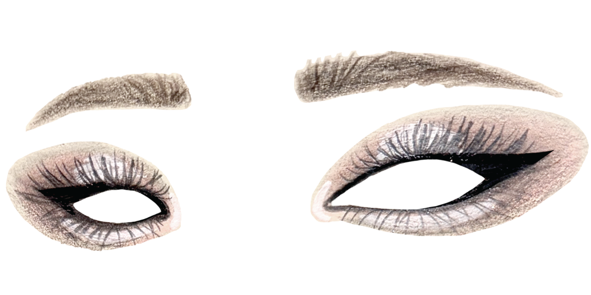
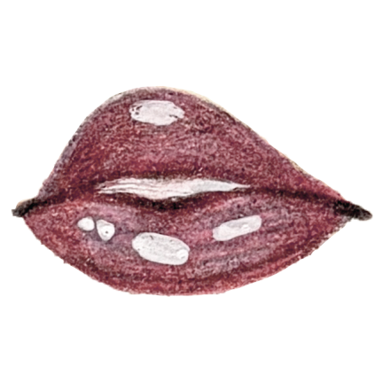

The Look
Complexion
- MISSHA All Around Safe Block Waterproof Sun Milk SPF50+ PA++++
- e.l.f. Cosmetics Power Grip Primer
- Maybelline Fit Me Matte + Poreless Foundation
- Shade: 125 Nude Beige
- Tarte Shape Tape Creamy Concealer
- Shade: 35N Medium
- Placement: Spot concealer wherever needed
- Hince Dewy Liquid Cheek
- Shade: 04 Husky Mauve
- AMTS X TRUE BEAUTY Palette: Some Sweet
- Shade: Darkest brown
- Tool: Medium fluffy eyeshadow brush
- Placement: Contour sides of and right above the tip of the nose
- Coty Airspun Loose Face Powder
- Shade: Translucent
- Tool: Powder puff; big fluffy brush
- Placement: Oily zones; all over face
- NYX Professional Makeup Plump Finish Setting Spray
Eyes
- Hince Dewy Liquid Cheek
- Shade: 04 Husky Mauve
- Placement: Upper and under eyelid
- L.A. Girl Perfect Precision Eyeliner Pencil
- Shade: Dark Brown
- Placement: Extend length of eyebrows; waterline, lower lashline, outer corner of lower lashline
- Urban Decay "Naked Sin" Mini Eyeshadow Palette
- Shade: Boring; Twisted
- Tool: Medium fluffy eyeshadow brush; small fluffy eyeshadow brush, small angled brush
- Placement: Upper and under eyelid; outer corner into lashline, outer corner of lower lashline
- AMTS X TRUE BEAUTY Palette: Some Love
- Shade: Pale Pink; Silver Glitter
- Tool: Small flat and rounded eyeshadow brush
- Placement: Below lower lashline (creating the aegyo-sal); eyelid, inner corner, center of aegyo-sal
- Wet N Wild On Edge Longwearing Eye Pencil
- Shade: Black
- Tool: Small angled brush
- Placement: Medium wing on upper lashline
- Too Faced "Kitty Likes To Scratch" Eyeshadow Palette
- Shade: Power Ballad (deep black)
- Tool: Small angled brush
- Placement: Set and refine wing on upper lashline
- D-UP Airy Curl Lash
- Type: "04 Long - Eye corner type"
- Tool: False lash tweezers, D-UP False Eyelash Glue "552 Clear Type"
- Placement: Apply glue along top of lash band, wait until glue is slightly tacky, angle lashes upright, set and apply just above natural lashline (outer two thirds)
- Carmex Lip Balm
- Placement: Leave on lips at least 10 minutes before applying other products.
- Oreve Lip Pencil
- Shade: Moonlit Mauve
- Placement: Round out cupid's bow, line top and bottom lip, fill outer corners of lower lip
- M.A.C. Matte Lipstick
- Shade: 617 Velvet Teddy
- Placement: Fill in lips
- Rom&nd Glastling Color Gloss
- Shade: 06 Deepen Moor
- Placement: Cupid's bow, center of bottom lip